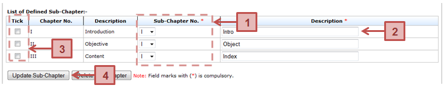

Prerequisite
The thesis sub-chapter has been created
Steps
Next Action
The student can proceed with the submission of the monthly progress report to the Supervisor.
Warning
System will prompt a notification message if the update of the thesis sub-chapter without ticking/selecting the sub-chapter and empty chapter description.
Note
None
Created with the Personal Edition of HelpNDoc: Single source CHM, PDF, DOC and HTML Help creation